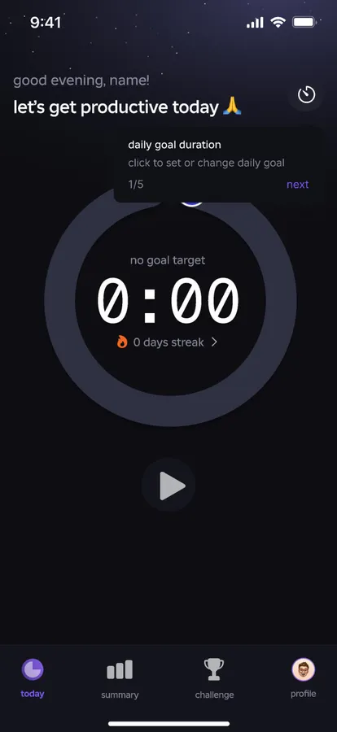
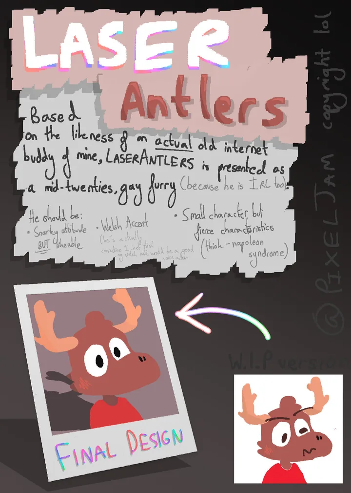

/whoami
hiya, I'm milo.
19·uk·software engineer, semi-professionally·furry·runs nixos on purpose
I make apps for phones, games in Godot and Roblox, the odd bit of hardware, and a NixOS config I've sunk frankly too many evenings into. Some of it is on GitHub, one of it lives in my neighbours' kitchen, and I draw stick men with far more confidence than skill.
/now
what I'm poking at lately
- nixeljamMy NixOS flake. Modular, over-thought, and the reason this site looks the way it does.
- habitsA habit tracker in Kotlin. The repo description says "shitty" and honestly I stand by it.
- worksiteThe sensible, tie-wearing version of this website, for people who might pay me.
- legacy console shadersQuick GLSL shaders for Minecraft 1.6.4 via the core shaders mod. Works on Iris and Optifine.
- xeetcode-submissionsLeetcode and Neetcode solutions, committed so I can't pretend I didn't skip a day.
/projects
the greatest hits

mobile app · releasing 2026
Lockyn
A study and productivity app for GCSE and sixth-form students. Commercial, properly designed, and held hostage by A level results day.
hardware · shipped to a client
AutoPet Feeder
A fully automated pet feeder built to my neighbours' spec. Raspberry Pi, a servo, a touchscreen, a 3D printed shell with an oak finish.

game · godot
An accessible platformer
My Extended Project Qualification: an accessibility-first platforming and exploration game, built over six months of weekends.
/.config
what I reach for
languages, roughly in order of affection
Python when it runs as a service. TypeScript and React Native when it runs on a phone. C# when the coursework says so, GDScript and Lua when it's a game, Swift when I'm feeling brave. Nix underneath all of it, because if I can't rebuild it from the flake I don't really trust it.
the desk
- os
- NixOS, declared down to the cursor
- wm
- Hyprland
- term
- Ghostty + Zellij
- theme
- pixeljam (you're looking at it)
- tablet
- iPad Pro + Pencil, Procreate
- maps
- de_lake, and I will die on this hill
/git log
the commit skyline

/elsewhere